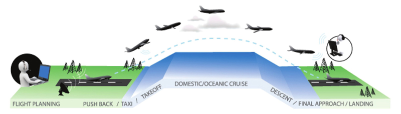
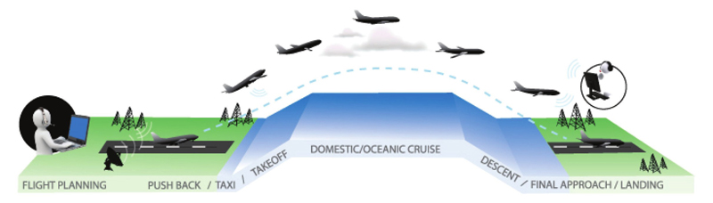

Professional Experience
 
Software Engineering Intern
May 2021 - Aug. 2021
I spent my summer at Viasat developing and debugging Kubernetes infrastructure and Networking issues on a CintOS Linux bare metal environment. One of the main tasks I worked on was researching and developing a mechanism to control software updates during flight phases. Software updates require the server on the plane to make communication with the server on the ground, causing the inflight connectivity to become less stable. While in the cruise phase it is important for customers to have the strongest connectivity possible. Thus, I worked with a few teammates to reconfigure the server's firewall and device categories in order for software updates to be blocked when in specific phases like cruise.


Cyber Security Intern
May 2020 - Dec. 2020
At Sandia I developed a hierarchical algorithm that broke flight trajectories into straight and curved segments. This allowed me to identify angles and curves within the trajectories and eventually allowed me to create a clustering algorithm that clustered trajectories based on polygonalness. I was able to cluster out staright flights from zig-zagged flights from flights with shapes like traingles or squares.
I also got the chance to take my project a step further and in a different direction. I taught myself machine learning tools like PCA and Random forest classifiers on scikit-learn to analyze the ability to predict a trajectory's course. I implemented a curve-interpolation algorithm in Python that took in the previous n points of the trajectory and predicted where the next point would be based on the input. By the end of my project, I was able to predict the next point of a trajectpry with 78% accuracy.
Final Fantasy Project
Working on a team of 3, I developed a game engine and text-based graphics for a Final Fantasy themed video game in Ocaml. The game included 6 options for character choice, 3 boss levels, and over 30 different spells and powers. Each state of the game required animation and calculations for health and magic.
Source Code: Github
Researcher in Computer Networks
Aug 2021 - Present
I am currently working with Professor Rachit Agarwal and PHD student Saksham Agarwal on developing a form of synchronous TCP. My role on the team is to help generalize the protocol from a two-tier topology to a three-tier topology.